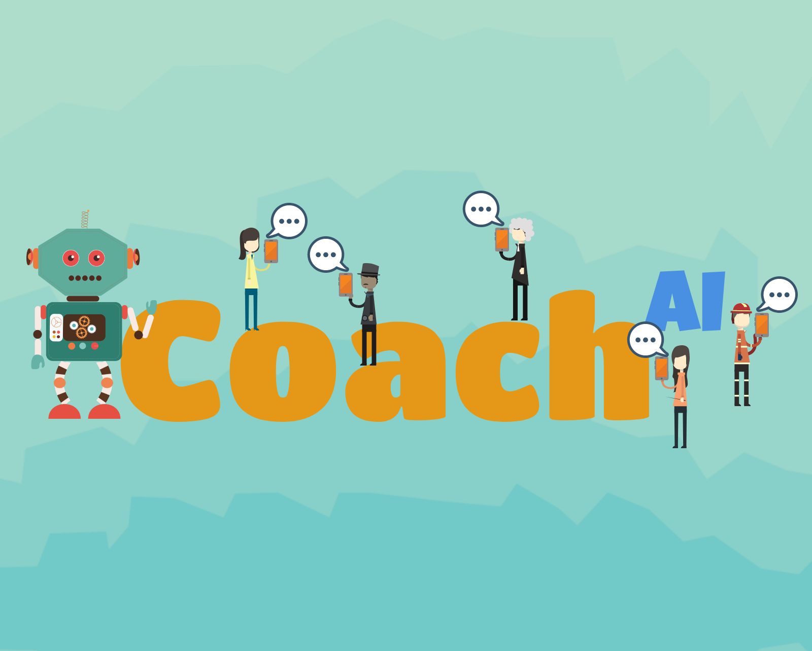

I am a Ph.D. candidate in the Department of Information Engineering and Computer Science - University of Trento. By joining the ICT doctoral school program in 2014, I became a research fellow member of ICT4G research unit inside Fondazione Bruno Kessler FBK, Trento - Italy. At the same time, my research was partially funded by CRG - Centro Ricerche GPI. I acquired my master's degree (MSc) in Computer Science and Engineering in 2014 from the university of Trento, and with a focus on semantic web and NLP. I did my master thesis on semantic and entity matching. Before all these, I earned my Bachelor (with high honors) in Information Technology in 2012 from Eastern Mediterranean University (EMU) - Cyprus. My study was funded with a government scholarship.
My PhD research aims to identify the correlation between diet and chronic diseases, and applying multidisciplinary research approach to promote healthy lifestyle. I am investigating motivational techniques, such as gamification and persuasive technologies to engage users in self-monitoring their condition. Additionally, I am also conducting research on AI and applying conversational agents as a tool in preventive healthcare and quantified-self. My PhD research is specifically focused on diet management, quantified-self and prevention from chronic disease.
My research activates includes a multidisciplinary approach to build socio-technical systems in health and wellbeing. That said, I am working on several technical approaches and behavioral change techniques to design novel ideas and state of the art techniques using machine learning, recommender systems, and dialogue models.
My research is multidisciplinary in nature, including a mixed scientific discipline from HCI, artificial intelligence, behaviour change theories, and health informatics. My main research activity is centered on social informatics in lifestyle promotion. I began my PhD by investigating gamification and persuasive technology in enhancing user engagement in self-managing their health condition.
The outcome of my research is to develop telemedicine application that provides coaching support. The approach introduces a semi-automated system to provide support for both the physician and the patient. We aim to decrease physician’s burnout during the coaching intervention and provide continues care to patients, especially in the absence of the care provider. We rely on conversational agents to handle physician’s repetitive tasks and provide continues care to patients. It's mainly related to detecting user adherence pattern with respect to an activity and then providing the right activity to similar users, based on their features (e.g., age, gender, dietary pattern, and other demographics).
I am strongly involved in various design oriented research, which are an essential part of my research in HCI and behaviour change. Below I listed some of my design techniques and methodologies skills.
Exp 4 years
Exp 8 years
Exp 3 years
Wide range of experience with an assortment of client-side and server-side programming languages, on the right I listed the mostly used web application technologies together with my skill level in each.
I am a TetraLingual person, and I speak at least three of the languages listed on advanced level.
I have acquired several experiences during my academic carrier, thanks to my dedication to research and passion to learn and acquire new skills. I am listing below some of my technical, non-technical, research and other experiences.
I am providing a list of the projects I worked on during my PhD research. Some projects are related to my PhD experimentation, whereas others are personal projects that I designed or developed as side projects or for personal interests.
I am providing a list of my achievements and awards obtained during my academic career.
These are some of the (un)published scientific articles I worked on, and still ongoing during my PhD, I also included a list of the technical reports that I compiled while achieving interesting insights throughout my research investigation.
Thank you for visiting out my profile. If you would like to get into contact with me about any research idea, collaboration, or even to discuss an idea, please write me on my email on the right.
{kind=link}
{kind=link}
{kind=link}
{kind=link}
{kind=link}
{kind=link}
{kind=link}
{kind=link}
{kind=link}